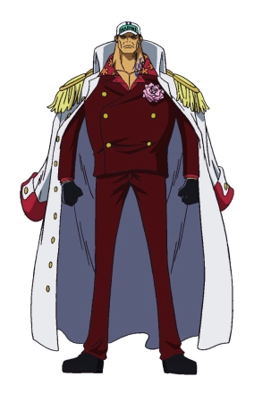
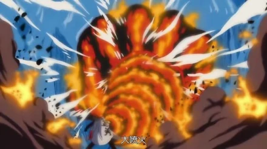
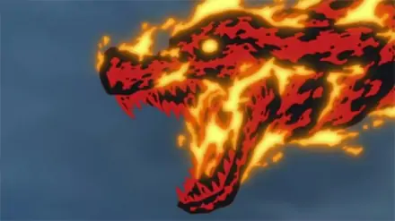
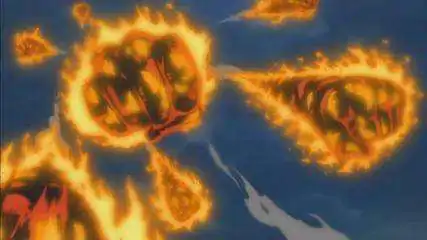

点击人名可依次查看人物介绍
| 赤犬 | 黄猿 | 青雉 | 藤虎 |
|  | 赤犬奉行“彻底的正义”。性格刚直，手段残酷不留一切情面，绝不允许一丝“恶”的存在。为了能完成任务，可以毫不在乎的将同僚和一般民众都当成目标歼灭。哈拉奥事件中，他以可能窝藏考古学家为由，命令部下炸毁载满了奥哈拉居民的避难船。 顶上战争中，他也亲自处决了因为害怕战死而打算逃走的海军士兵。赤犬极其注意维护海军的威严，是一个铁血军人。 |
||
果实：岩浆果实
招式1：大喷火 先把手臂变成以熔岩组成巨大的熔岩拳，再模拟火山爆发带来的冲击力把拳头发射出去，威力足以把比巨人族还大数十倍的大型冰山瞬间粉碎蒸发殆尽。在大喷火爆裂后会化为无数的火山弹，每个火山弹的威力都可以轻易毁灭一艘超大型战船 |
 |
招式2：犬啮红莲 先将手臂熔岩化，再将熔岩化的手臂变成狗头的形状并伸长熔岩化的肢体攻击敌人，并且由熔岩构成的狗头会在攻击时咬向敌人 |
 |
招式3：流星火山 双拳以熔岩化的形式产生大量的巨大熔岩拳并向空中发射，随后犹如流星雨般的岩浆拳会不断从空中坠落，把大地化为一片熔岩火海 |
 |